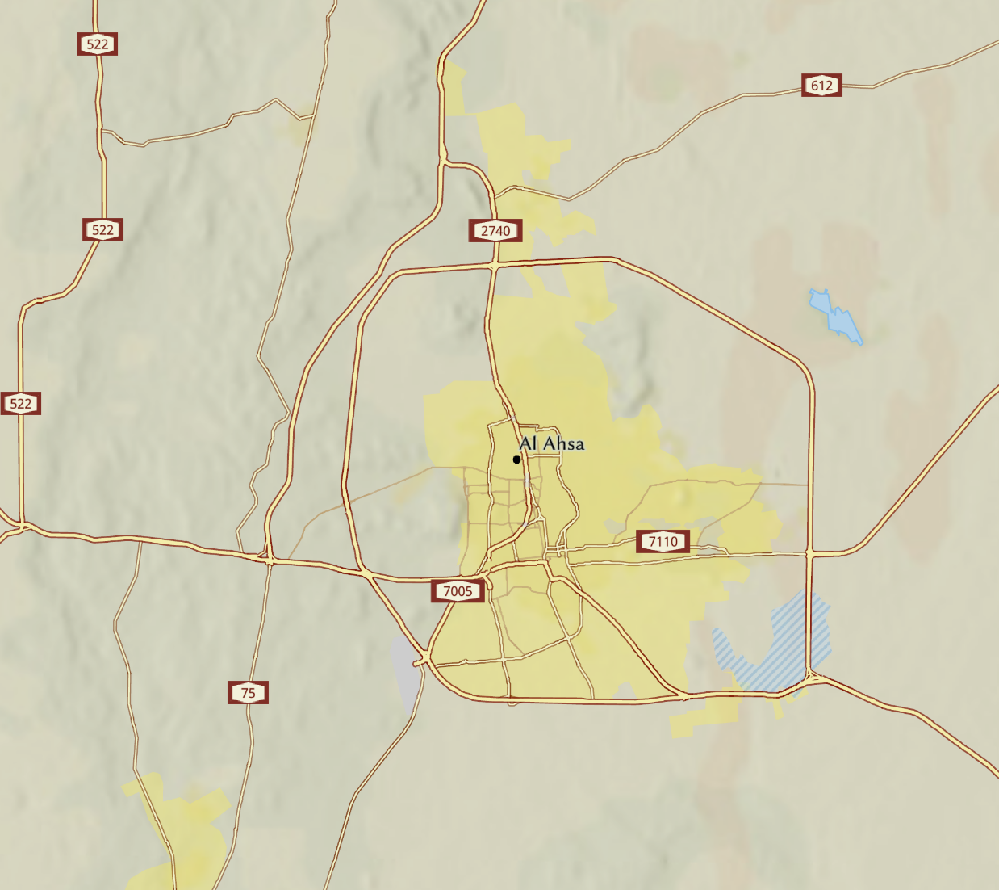
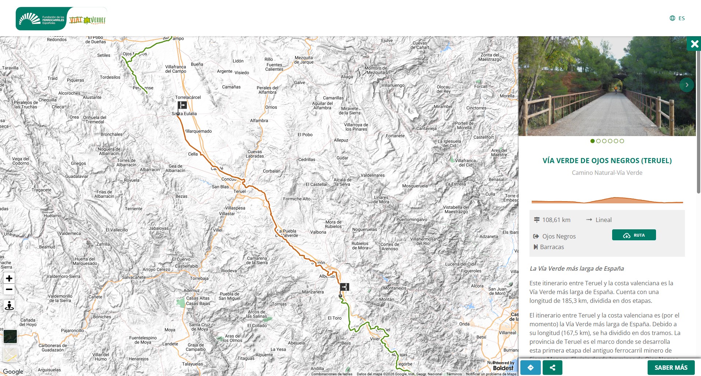
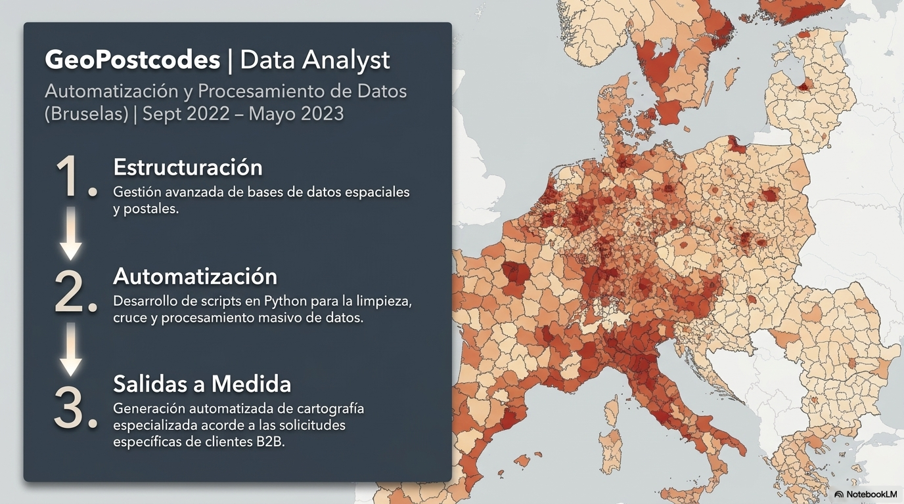
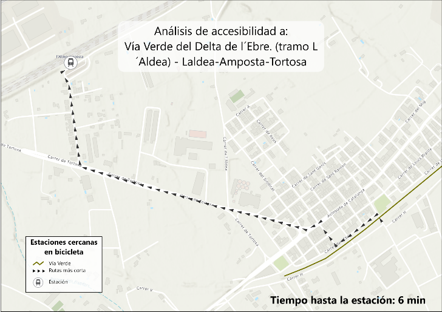
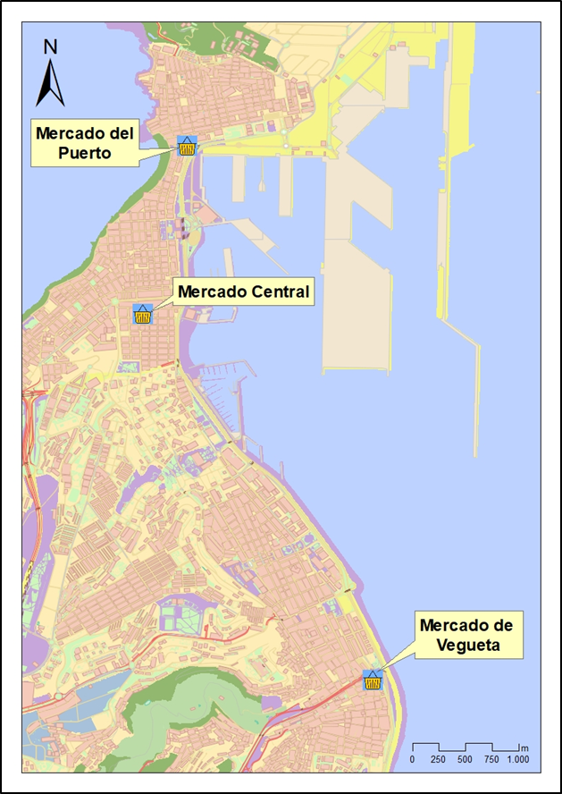
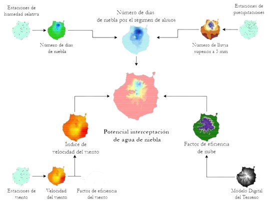

Transformando datos espaciales en soluciones estratégicas para el territorio.
Soy un profesional en Geografía y Sistemas de Información Geográfica (GIS), con sólida experiencia en análisis de datos espaciales, gestión de bases de datos geoespaciales y planificación territorial.
Me apasiona resolver problemas complejos a través de herramientas GIS avanzadas como ArcGIS, QGIS y Python, aportando valor en proyectos de alto impacto. Cuento con experiencia comprobada en consultoría técnica para proyectos a gran escala, especialmente en planificación urbana, movilidad y desarrollo de infraestructuras.
Mi enfoque combina el rigor técnico con una visión estratégica, automatizando procesos y generando cartografía y modelos que facilitan la toma de decisiones.
Análisis espacial y modelado territorial.
Python, ArcPy, GeoPandas y flujos eficientes.
Master plans, movilidad y gestión ambiental.

IDOM | Planificación Urbana

Fundación de Ferrocarriles Españoles

GeoPostcodes | Data Analysis

FFE | Accesibilidad y Población

Ayuntamiento de Las Palmas de GC

Instituto Oceanográfico de Canarias
Si buscas optimizar la gestión territorial a través del análisis espacial y el desarrollo GIS, no dudes en contactarme.